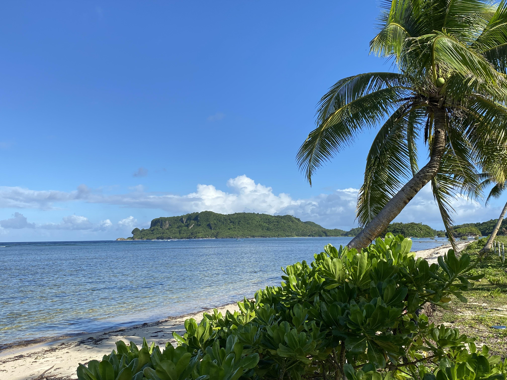
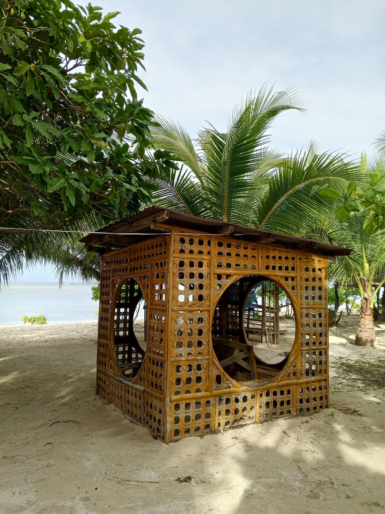
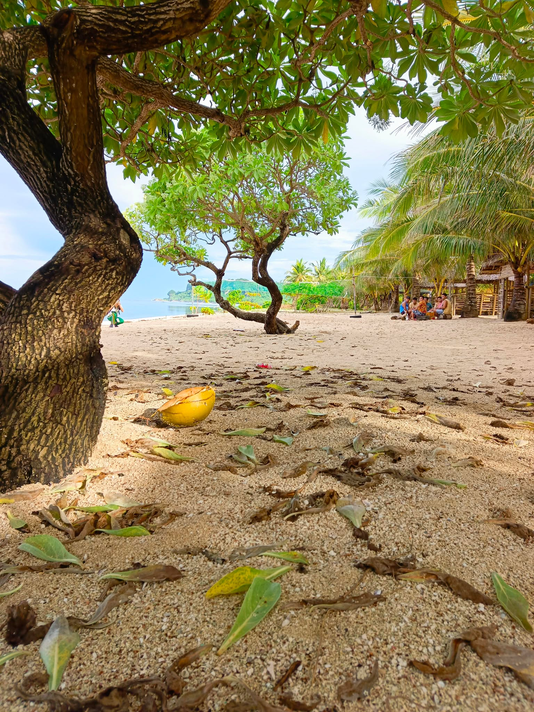
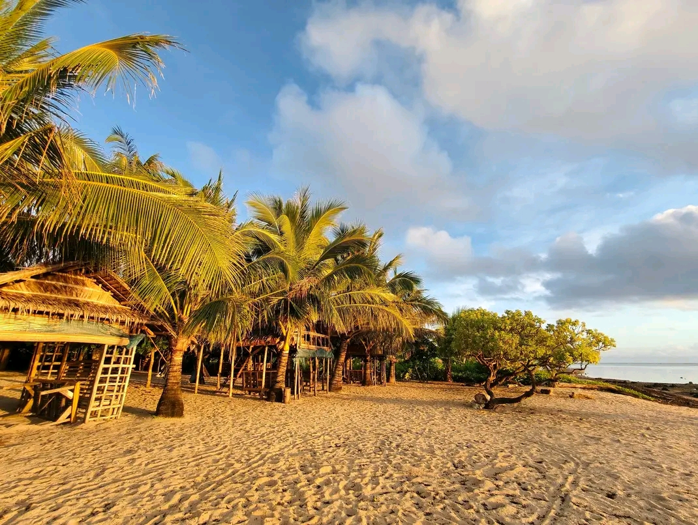
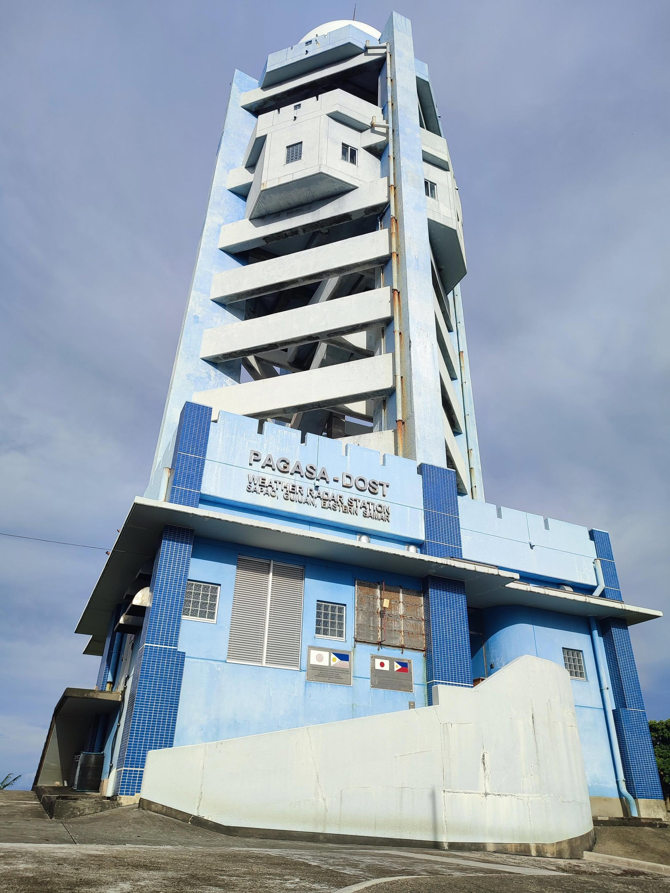
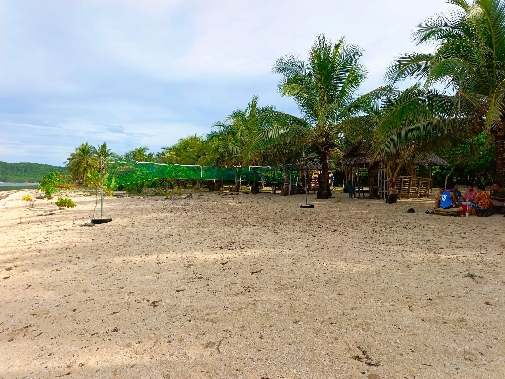
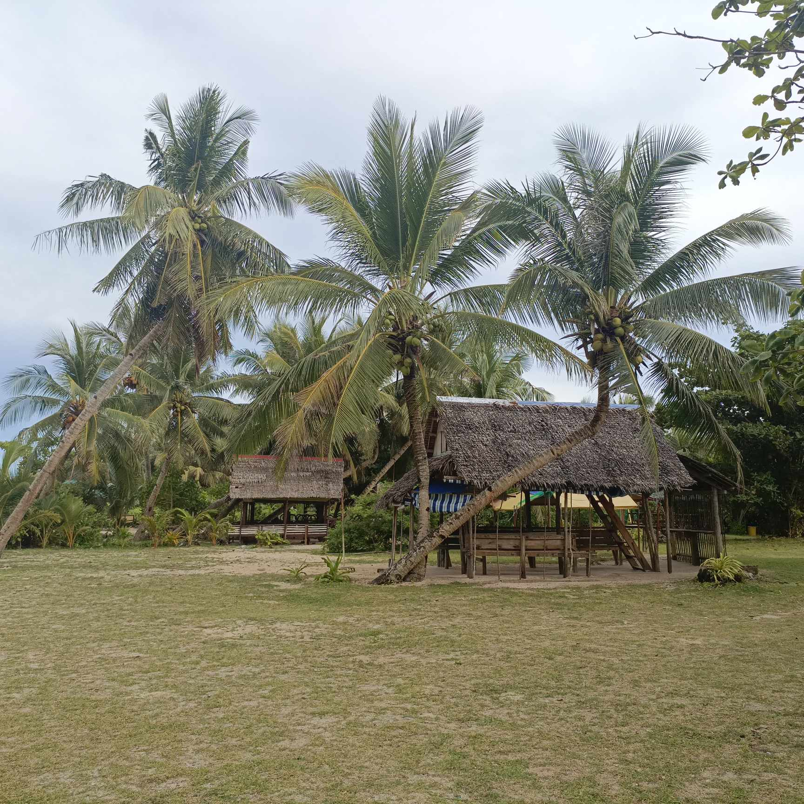
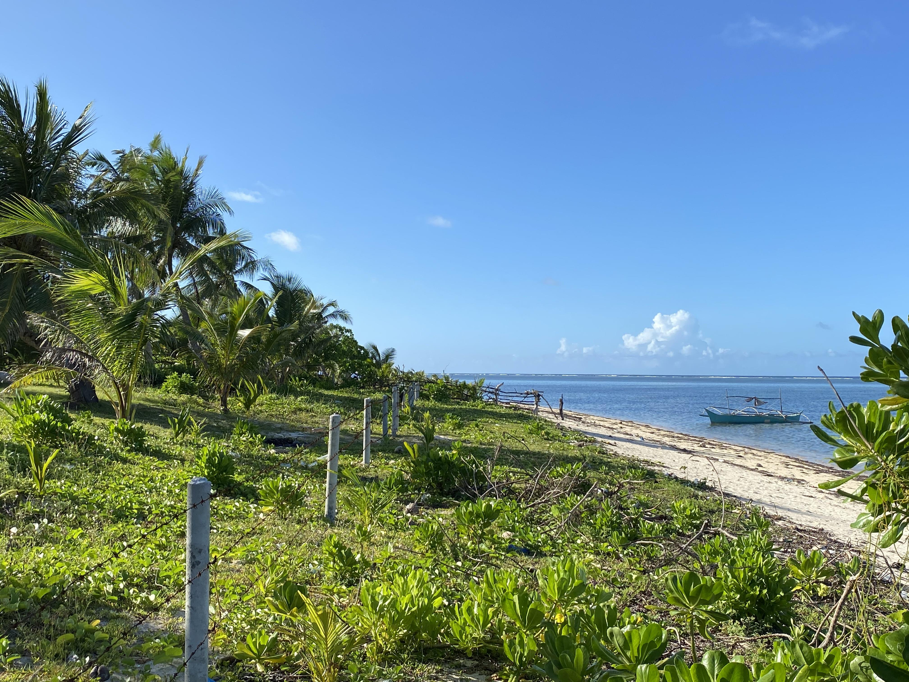
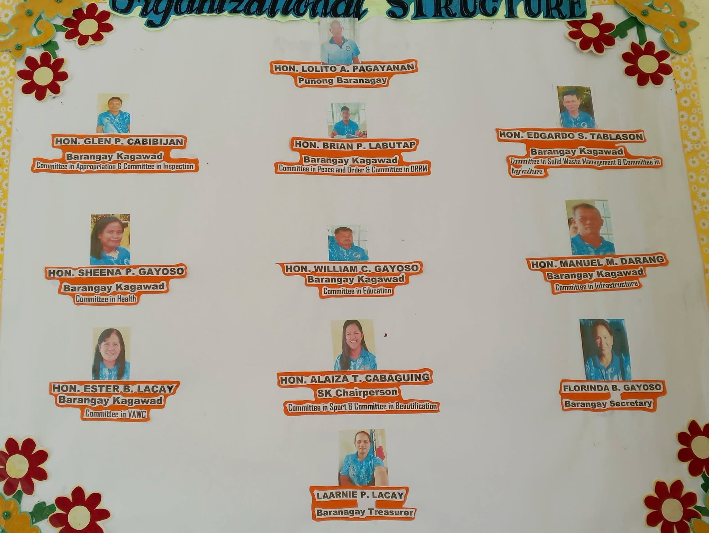
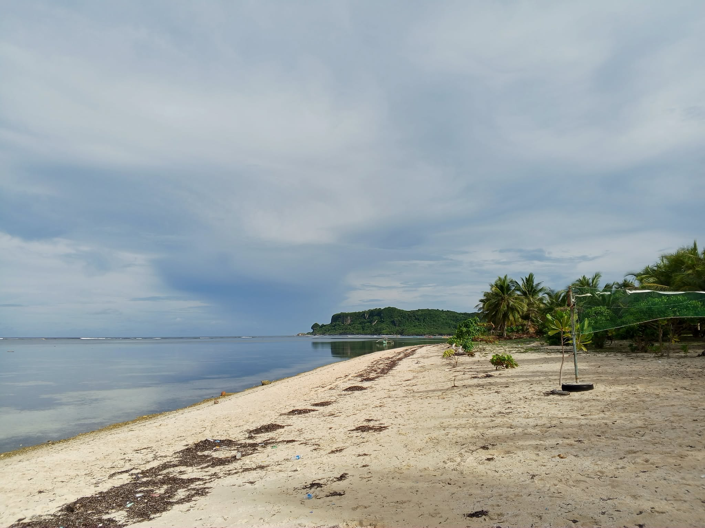

Location & directions
Barangay Sapao lies along the coast of Guiuan, Eastern Samar, a short ride from the town proper. Most destinations are reached along the barangay road, followed by a short walk to the shore.

Guiuan, Eastern Samar
Quiet beaches, living craft traditions and a community that still moves at the pace of the tide.


Explore Sapao
Nestled along the serene coastline of Guiuan, Barangay Sapao offers a peaceful blend of natural beauty, cultural heritage and warm community life.
Follow the local trails, enjoy the sea breeze and learn the stories behind each destination — most still cared for by the families and residents who call this shoreline home.
Beaches and landmarks here are cared for by the community — visiting means supporting the families who keep them open.
Most spots are reached by tricycle from Guiuan town proper, followed by a short walk along the barangay road.
Several sites are still developing as tourism spots — residents are the best source for current access and hours.
Places to visit
From open-air beach cottages to a hilltop weather station, each destination tells a different part of the Sapao story.

01Open-air cottages, calm water and an easy stretch of sand — one of Sapao’s quieter coastal treasures.
Explore destination 02
02
A calm, spacious shoreline shaped by resilience and rebuilding.
Explore destination 03
03
Home of the Panday blacksmiths and shell and scabbard artisans.
Explore destination 04
04
The spiritual heart of the barangay, and home to one of its most beloved fiestas.
Explore destination
An elevated station that watches the skies over the coast, helping fisherfolk, farmers and families prepare for strong winds and typhoons.
Explore destination


Experiences & local culture
Sapao’s character lives in its people — the hands that forge, weave and harvest, and the celebrations that bring the whole barangay together.
In Sitio San Roque, blacksmithing is a craft passed down through generations of families.
Meet the shell and scabbard artisans and the Paraglukad — the coconut farmers whose work sustains the sitio.
Every August 20th, Sitio San Roque comes together to celebrate its patron saint.
The annual fiesta of Sta. Cruz Parish draws families and visitors from near and far.
Many spots were opened to the public by local families — every visit is a welcome from the people who live here.
About Barangay Sapao
Barangay Sapao is a coastal community in Guiuan, Eastern Samar, known for its warm people, strong community ties and natural attractions.
Its shoreline, local landmarks and shared traditions make it a place worth visiting for travelers who want more than a beach stop. Sapao continues to grow through the work of residents, local officials and community organizations — while staying focused on preserving its identity and heritage.
Craft traditions and fiestas handed down through generations.
A shoreline rebuilt and cared for after typhoons, including Yolanda.
Fishing, coconut farming and craft that sustain local families.
Residents who keep the beaches and landmarks open to visitors.

For official matters, visit the Barangay Sapao office.
Plan your visit
Sapao makes an easy day trip. Several sites are still developing as tourism spots, so details marked Confirm locally should be checked with residents or the barangay office.
Barangay Sapao lies along the coast of Guiuan, Eastern Samar, a short ride from the town proper. Most destinations are reached along the barangay road, followed by a short walk to the shore.
Tricycles from Guiuan town proper are the usual way to reach Sapao and its destinations.
Confirm fares locally| Coca Beach cottage | ₱500 – ₱1,000 |
|---|---|
| Coca Beach day use | ₱10 per visitor |
| Dumpao cottage | Varies — ask locally |
| PAGASA-DOST | None — guided visits |
| Sta. Cruz Parish | Free — donations welcome |
The Barangay Sapao office is the best place to start. They can point you to the latest cottage availability, fiesta dates and local Facebook updates — and connect you with residents who can guide you to each site.

Your visit awaits
Spend a day on Sapao’s quiet shores and discover the community that keeps them.
Plan Your Visit